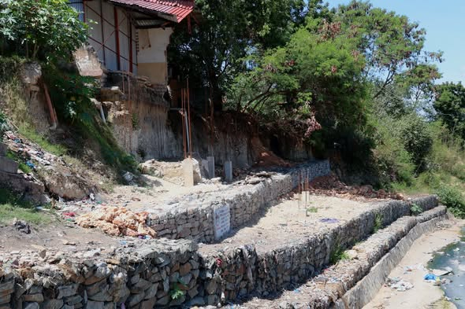

Infrastructure works
Gabion Structures
Durable stone-filled gabion walls and erosion-control structures for roads, drainage corridors, slopes, properties, and communities across Kenya.
What we deliver
Practical protection for challenging ground conditions in Kenya.
CLAVO Construction builds gabion walls, retaining structures, riverbank protection, drainage-channel protection, and slope stabilization systems for roads, developments, homes, institutions, and public infrastructure.
Gabions combine durable wire mesh with properly selected stone to manage ground pressure, reduce erosion, and allow controlled drainage. Our installation approach responds to soil conditions, water movement, slope geometry, access, and the required service life.
What happens
- Site, soil, slope, and drainage assessment
- Structure, stone, mesh, and access planning
- Foundation excavation and preparation
- Gabion basket placement, tying, and stone filling
- Drainage checks, inspection, and completion
Gabion projects in Kenya
Retaining walls, drainage protection, and erosion-control works.
Our gabion work supports safer slopes, protected property boundaries, controlled water flow, and stronger road and drainage infrastructure. The gallery shows stone-filled baskets, tiered retaining walls, channel works, and completed gabion protection.




Key outcomes
Stronger slopes and protected infrastructure.
Well-designed gabion structures provide a practical response to erosion, runoff, unstable ground, and exposed infrastructure while fitting naturally into many Kenyan sites.
- Erosion and scour control
- Slope and embankment stabilization
- Roadside and property protection
- Drainage and water-flow management
- Durable stone-filled structures
- Site-specific construction planning
Start a conversation
Facing erosion or retaining challenges?
Share your site conditions and we will help identify a durable infrastructure response.
Request a Quote